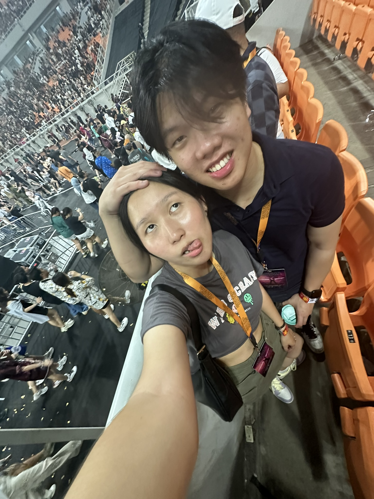

Dear Jennifer,
Happy valentines day and anniversary soon! First and foremost, I would like to
thank God for all the moments that we share together. I can't believe that we had spent 3
years together and I have to admit it that although we are not always perfect
but I would like to thank you for staying by my side through both the high and lows of
our relationship! You truly mean the world to me (second to Jesus ofc) and I really
do pray that one day we will be able to finally be united together legally
by marriage ofc lolol. So right now, I am praying (and I hope you do too!) for
not only our our successes but also our future together! As always trust in
Jesus and I pray that I can marry this girl. Amin
Love you always!
~ Cizz❤️
P.S. Jangan bosenan n tantrum terus ya, bosen itu normak di relationship
klo udh bosen itu saatnya komitmen yang dikerahkan and selagi u bosen, coba aja
level up kyk belajar or even cari hobi baru. Siapa tau bisa cari rejeki dari situ
LMAOO.
